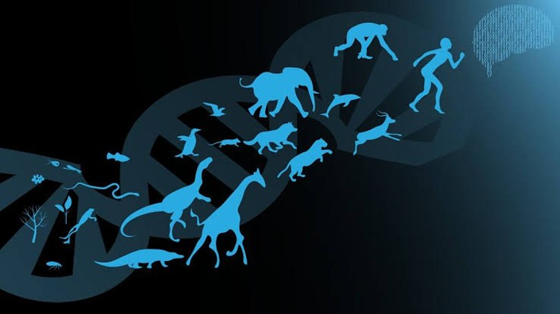
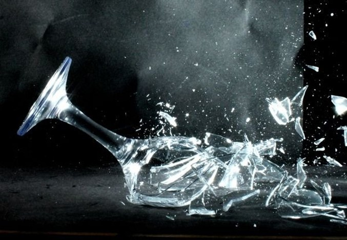
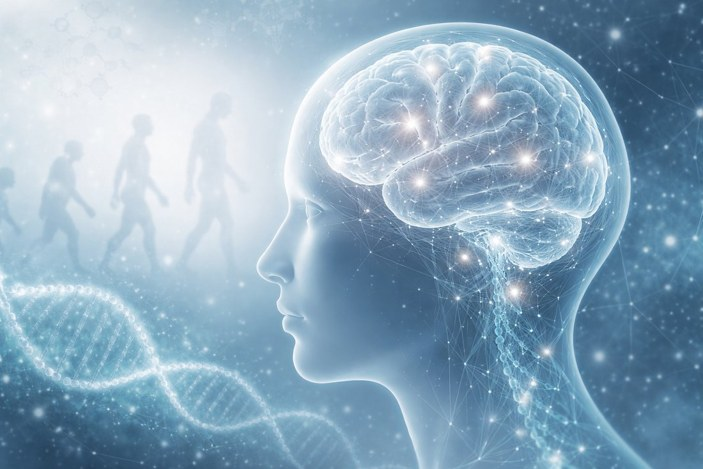
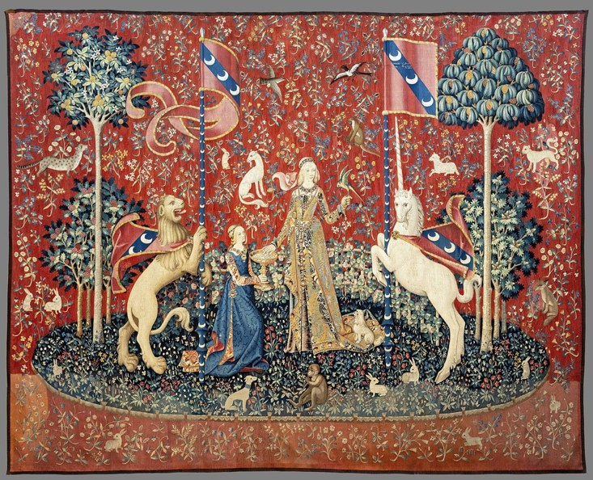
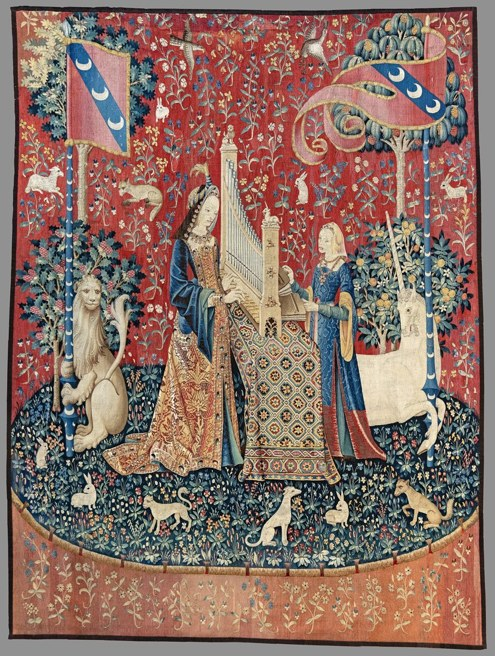
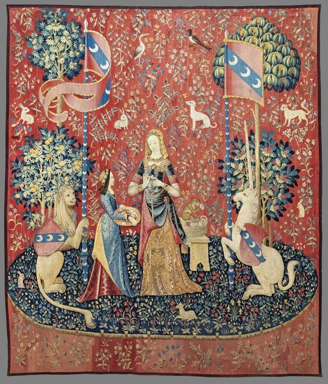
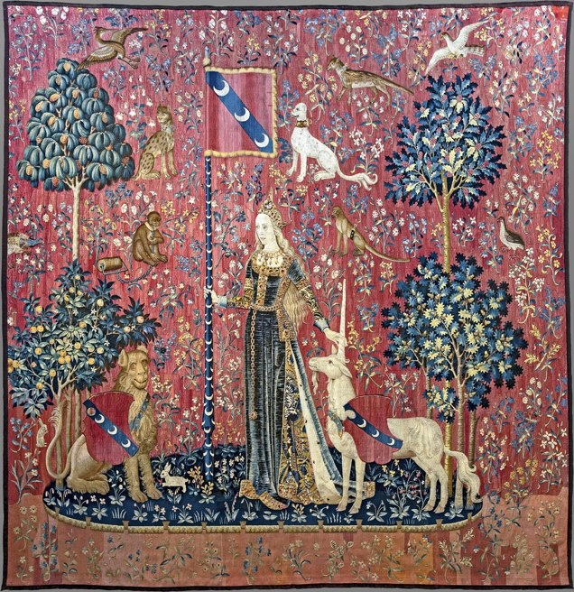
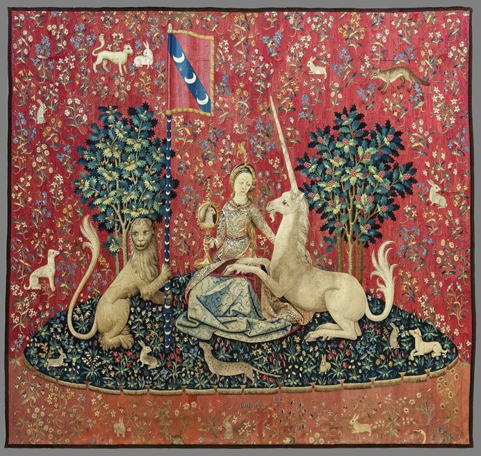
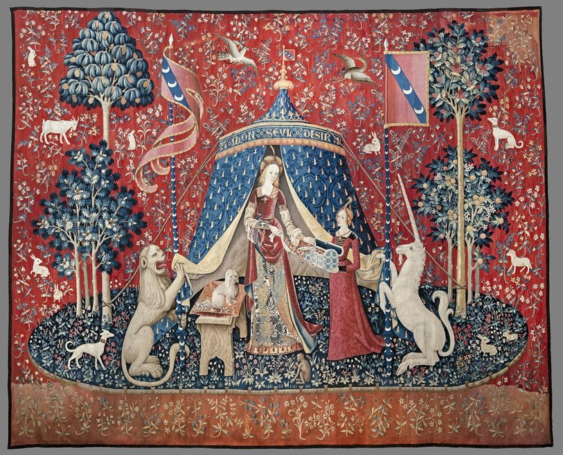

Greetings
Greetings, everyone!
I am Jonathan Hanjaya, a structural engineer from the IndoCAD Southernwaters Team. Yup, the one you know as the “milk” guy. 🥛
If you are reading this email, it means my time at this company has come to an end, and I am preparing to begin the next stage of my life’s journey.
My journey here began as an engineer with the Amazon Team, led by Steven, before eventually bringing me to the Southernwaters Team, led by Rahmia. Looking back, it is remarkable how one journey can take us through different places, introduce us to different people, and leave us with experiences we never expected. What began as one chapter of my professional life has become a collection of memories, lessons, challenges, and moments shared with all of you.
Before I turn the page to whatever comes next, I would like to share a few thoughts that have been on my mind lately.
Evolution
From the earliest life to humanity

Life on Earth has changed over hundreds of millions of years, giving rise to the extraordinary diversity we see today. From the earliest forms of life in the sea, to the first creatures on land, to countless generations of change that eventually gave rise to humanity, it is a journey so vast that no single individual can witness all of it within a lifetime.
Yet each of us is a small part of that journey, contributing in our own way to a world that will keep changing long after we are gone.
Perhaps our own lives are much the same. We arrive, we learn, we struggle, we grow, and eventually we move on. We cannot stay in one place forever, nor can we fully know what our presence will mean to others.
But while we are here, we can choose to make our time meaningful. That brings me to a few thoughts that have stayed with me along the way.
On Life, Happiness,
and Possibility
They are not rules I expect anyone to follow, only reflections that have gradually shaped the way I see life.
“A life that lives without doing anything is the same as a slow death.”
To me, life should be more than simply existing. It is about our willingness to learn, to grow, and to discover what we are capable of becoming. This does not mean we must constantly work, chase achievements, or prove our worth to others. It means never abandoning our willingness to discover what life has yet to teach us.
And somewhere along that road, we meet happiness.
“If happiness had a form, what would it look like? Perhaps it would be something like glass, because we do not always notice it until the light catches it at just the right angle.”

Glass can also shatter, and it is often then that we see how much light it was carrying. Happiness works the same way. It is often already beside us, hidden in ordinary conversations, shared laughter, and the kindness we give and receive. We do not always need to search for something extraordinary.
Sometimes we only need to recognize what has been there all along. The people around us and the small moments we share may hold more meaning than we realize.
That is part of what makes us human: our ability to turn ordinary moments into something meaningful through the strength and kindness we share with others.
“With the potential within us, we can demonstrate to the world the strength and kindness that define what it means to be human.”

I believe every human possesses an inner god called possibility: the power to transcend the present, imagine a future that does not yet exist, and strive to bring it into reality.
Human history is a record of that power at work. Our ancestors learned to make fire and shape tools. Navigators crossed the open Pacific guided only by the stars, the waves, and the flight of birds. Within a single century, humanity went from the first powered flight at Kitty Hawk in 1903 to footprints on the Moon in 1969. Each step began as something people were told was impossible, and each was taken by someone willing to imagine it anyway.
Today, that exploration has only widened. We send rovers to roam the surface of Mars. The James Webb Space Telescope looks back toward the early universe. The Voyager probes, launched in the 1970s, have travelled beyond the Sun’s influence into interstellar space. We reach the deepest trenches of the ocean, decode the genes that make us who we are, and connect across continents in an instant. The inner god of possibility is not a metaphor; it is the reason any of this exists.
So never be afraid to believe in that possibility. With willpower, patience, and the courage to take the first step, a path may open where none seemed to exist before. We may not change the whole world in our lifetime. But we can change a little of it for the better, and that change may continue long after we have moved on.
Life, happiness, strength, possibility, and willpower may seem like different subjects, yet to me they are tied together by a single question: what do we choose to do with the life we have been given, the world we experience, and the possibilities within us?
It was while reflecting on this question that I found myself drawn to a remarkable series of medieval tapestries.
The Lady and the Unicorn
Among the works of art that have survived the centuries is a series of medieval tapestries known as The Lady and the Unicorn, created around the turn of the sixteenth century and preserved today at the Musée de Cluny in Paris.
Five of the six are commonly associated with the five senses. Each shows the lady experiencing a different part of the world, surrounded by intricate patterns, animals, and flowers.





Together they remind us how we encounter the world through our senses. But experiencing the world is only part of being human. We may see the same thing yet understand it differently. We may hear the same words and interpret them in different ways. We may share the same experiences without reaching the same conclusions.
Our senses let us experience the world, but they do not decide what kind of people we become. That is shaped by what we learn from our experiences, how we treat others, and the choices we make. And this is where my earlier thoughts begin to come together. Happiness may have been beside us all along, waiting to be recognized. Our strength and kindness shape how we treat the people around us. Our inner possibility lets us imagine something better, and our willpower gives us the courage to pursue it.
But after experiencing everything the world has to offer, one question remains: what, ultimately, do we choose to desire?
À mon seul désir
To My Only Desire

The sixth tapestry bears a mysterious inscription, À mon seul désir, commonly translated as “To my only desire.” Unlike the first five, its meaning is far less certain.
The lady stands before a blue tent while her attendant holds open a casket. She appears to be handling a necklace, though the precise meaning of her gesture is still debated. Some interpret the scene as a renunciation of worldly pleasures, while others see an expression of free will or personal desire.
For me, that uncertainty is exactly what makes it so compelling. The first five tapestries show how we experience the world. The sixth asks what we value and what we choose to pursue. Our lives are defined not only by what we see, hear, touch, or accomplish, but also by what we believe in, what we are willing to work for, and what we choose to give to others.
We can use our experiences to build walls between ourselves, or to cultivate understanding. We can let our differences divide us, or try to understand the experiences that made each of us who we are.
For me, my À mon seul désir is this: I want to believe in every individual’s possibility, and in humanity’s ability to understand one another.
Peace cannot be sustained by force alone. It must also be built through understanding. We have different personalities, ambitions, beliefs, and ways of seeing the world. We may disagree, misunderstand one another, and sometimes struggle to find common ground. But I hope our differences never stop us from recognizing the humanity we share. Perhaps our greatest achievement will not be a world without differences, but one in which differences no longer keep us from understanding one another. And that may be another form of evolution: not merely changing who we are, but growing in our capacity to understand each other.
Possibility gives us something to believe in. Desire gives that possibility direction. Willpower gives us the courage to take the first step. We cannot control every circumstance or know where every path will lead, but we can choose what we believe in, what we are willing to work for, and what kind of future we hope to create. That is what À mon seul désir means to me: not a promise that the path will always be easy, but a reminder that each of us has a part to play in shaping the future.
Until Our Paths Cross Again
Which brings me back to where I began: this chapter is closing, and I am leaving.
Soon, the moments we shared will become memories. The conversations, the laughter, the challenges, and even the disagreements will drift into the past. Life will move forward, and new people and new stories will take their place. That is how it should be.
I do not expect to be remembered forever. Time softens most things. But I do not think that makes our time together any less meaningful. Perhaps something will stay with you, even if you cannot say where it came from: a lesson learned, a kindness passed on, a different way of seeing a problem. You might forget my words entirely and still carry the feeling behind them. I may never know, and that is all right. Evolution does not depend on any one individual being remembered. It continues through what is passed forward, often in ways no one could have predicted.
So, as our paths part, I hope our time together added something worthwhile to your journey, just as yours did to mine. That is more than enough for me.
I also want to thank some of you by name. Steven, thank you for giving me my start here with the Amazon Team and for trusting me with real responsibility early on. Rahmia, thank you for your guidance and patience on the Southernwaters Team. To my teammates, thank you for the shared work, the problem-solving, and the laughs between tasks. And yes, thank you for the milk jokes. 🥛
If you feel like it, I would love to hear your answer to one question: what is your À mon seul désir, the possibility you believe in or the future you hope to create? You can reply to me anytime, even with a single line. I would be glad to read it.
Thank you for the time we shared: the lessons, the conversations, the challenges, and the moments of happiness. Thank you for letting me be a part of your journeys, just as you have been a part of mine. Even where we did not always understand one another, I hope we keep learning to.
Farewell, everyone.
May we continue to evolve, not only in what we know and accomplish, but also in our strength, our kindness, and our understanding of one another. And when our paths cross again, perhaps we will find that we have all become someone a little different from who we are today.
Until then, never be afraid to believe in the possibilities within yourselves, or to recognize them in others.
To the possibilities that lie ahead, to the memories we leave behind, and to the humanity that connects us all.
Jonathan Hanjaya
Structural Engineer
IndoCAD Southernwaters Team